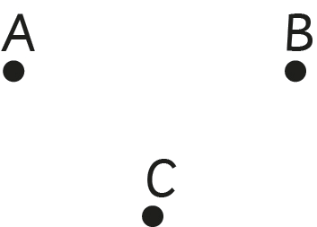

Chapter Four
Shapes and figures
Introduction
In this chapter, you will learn different types of plane figures. You will learn a point, line, line segment, and a ray. You will also construct plane figures using points, lines and line segments. The competencies developed will enable you to perform various real life activities such as in cooking, sewing, construction, carpentry, and painting.
A point, line, line segment and a ray
A point, line segment, line, and a ray are basic figures which are used in constructing various geometrical figures.
A point
A point is a geometrical figure which represents location of a place. A point has no size and it is shown by a dot. It has no length and width. Points are represented by capital letters. The following are examples of points.

The points A, B, and C in the examples represent different location of places.